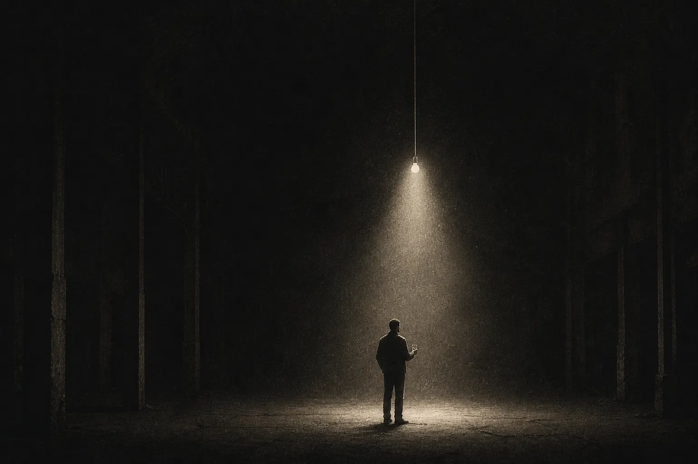
ながいゆうべ
「ながいゆうべ」は、グラフィック、Web、写真、映像、イラスト、手仕事。
ちがう場所でものをつくっている人が、肩書きを置いて集まる一夜です。
名刺の交換より、途中で終わった話のほうが、あとに残ります。
灯りをひとつだけ点けて、閉場まで、ゆっくり話しましょう。
“Nagai Yuube” is a one-night gathering for people who make things —
graphics, web, photography, film, illustration, and craft.
Leave your job title at the door.
We keep one lamp on until closing,
and let the conversations run long.
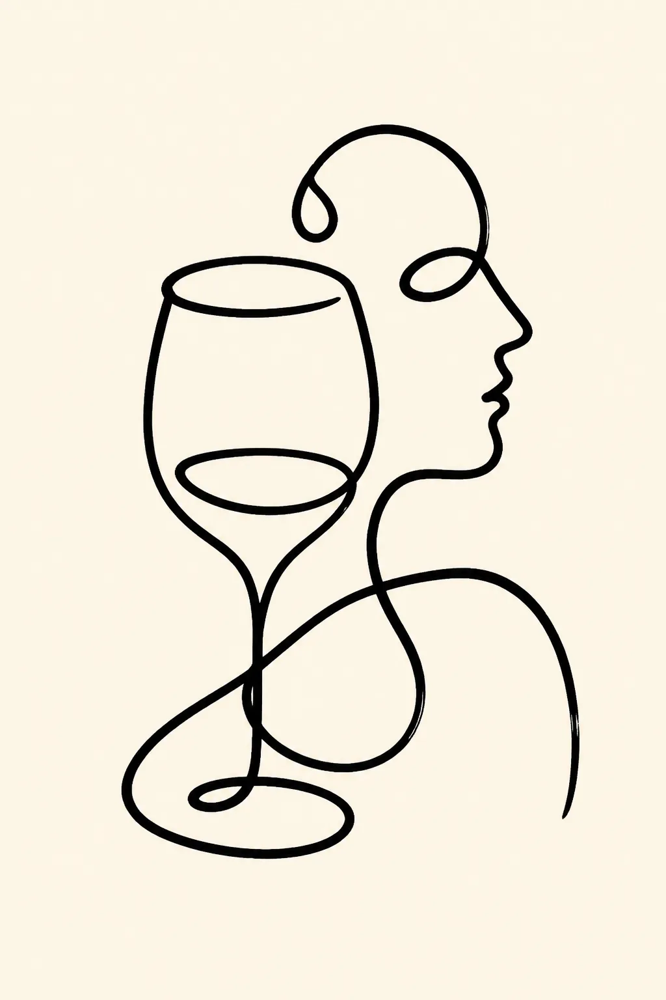
2026.
11.21.SAT
清水
夕凪倉庫
にて開催！
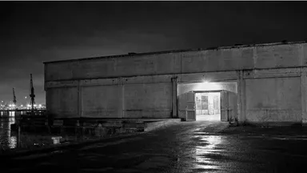
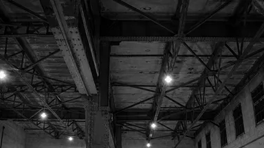
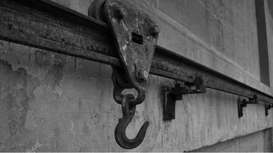
第三夜の会場は、清水の港に残る「夕凪倉庫」です。
1962年に建てられた冷蔵倉庫を、2021年に文化施設として改修した建物で、二階のホールには当時の梁と、荷を運んでいた搬入レールがそのまま残っています。天井が高く、声がよく通る場所ではありません。だからこそ、隣の人と話すのにちょうどいい。
今年は、Webやグラフィックだけでなく、写真や紙の仕事で活動するつくり手をゲストに迎えて、トークセッションとライブドローイングを開きます。人前で話されることの少ない、途中の話を聞ける一夜にします。
つくることを仕事にしている方はもちろん、学生の方や、これから始めたいと思っている方まで。それぞれの過ごし方で、この一夜を使ってもらえたら嬉しいです。
[ Information ]
- 日時
- 2026.11.21.SAT16:30〜21:30※入退場自由
- 会場
- 夕凪倉庫 2Fホール静岡市清水区日の出町
- 参加費
- 一般 2,500円／学生 800円※申し込みページより事前にお支払いください
- 飲食
- ドリンクと軽食をご用意します。※数に限りがあり、なくなり次第終了です。お持ち込みも歓迎します。
- 定員
- 240名※先着順
[ Guest ]
-
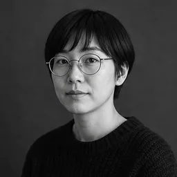
静岡県沼津市生まれ。看板屋と紙ものの仕事を経て、2021年から個人名義で活動。人の輪郭だけを残す描き方で、書籍の装画やレコードジャケットを手がける。第14回 装画コンペティション 優秀賞。
-
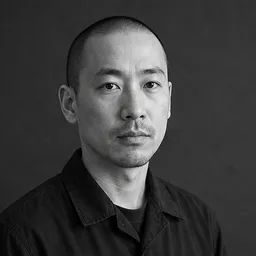
1996年生まれ、浜松市在住。制作会社でフロントエンド実装を8年担当したのち、2025年に独立。手ざわりのあるインタラクションを軸に、企業サイトから個人の作品集まで手がける。
-
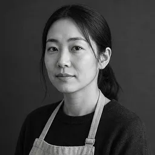
2003年に静岡市で創業した図案事務所。食品と工芸のパッケージを中心に、地域の一次産業に寄り添う仕事を続けてきた。今回はスタッフ2名が、同じ町でつくり続けるということについて話す。
-
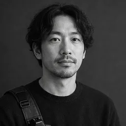
静岡を拠点に、工場や漁港など人の手が動いている場所を撮り続ける写真家。写真集『夜業』『みなとの音』。2026年 第41回 東海写真展 グランプリ。
[ Timetable ]
プログラムはすべて自由参加です。話を聞くのも、聞かずに話し込むのも、どちらでも。
-
16:30
開場
受付で、お申し込み完了メールの画面をご提示ください。
※学生の方は学生証もご用意ください。 -
17:00〜17:40
ライブドローイング
灰島ひなた／ゲスト会場から選ばれた一名を前に、その場で一枚を描き上げます。線を引きながら、どこを見て、どこを捨てているのかを話していただきます。
※モデルの応募は参加申込フォームから受け付けています。
※当日は下描きが済んだ状態から始めます。 -
18:00〜18:15
トークセッション
株式会社アオイテクネ／スポンサー近日公開
-
18:30〜18:55
トークセッション
倉持悠真／ゲスト【8年勤めて、ひとりになった】
会社の中でしかできなかったことと、ひとりになってできるようになったこと。独立の前後で手を動かし方がどう変わったのかを、実際の案件をもとに話していただきます。 -
19:10〜19:25
トークセッション
トビラ印刷株式会社／スポンサー近日公開
-
19:40〜20:05
トークセッション
株式会社みなも図案室／ゲスト【20年、同じ町でつくる】
静岡でパッケージをつくり続けてきた事務所が、地域の仕事との距離のとり方について話します。 -
20:20〜20:45
トークセッション
朝比奈湊／ゲスト【働いている場所を撮る】
工場や漁港に何度も通って撮る、という仕事の組み立て方について。声のかけ方から、撮らなかったカットの話まで。 -
20:55
集合写真
いったん手を止めて、全員で一枚だけ撮ります。
-
21:30
閉場
灯を落とします。続きは、それぞれの夜で。
-
21:45
撤収
この時間を過ぎると、倉庫には誰も残れません。
[ Sponsors ]
※社名は五十音順です
「ながいゆうべ」では、この一夜の趣旨に賛同し、一緒に灯りをつけてくださる企業・団体を募集しています。
詳細の資料をご希望の方は、主催の中辻（よふかし舎）までお気軽にご連絡ください。
お問い合わせ先：sponsor@nagaiyuube.jp
Archive
2025
第二夜。港沿いの空き倉庫に、約180名が集まりました。Webやグラフィックの人に加えて、写真・映像・木工と、手を動かす仕事の人が多く来てくれた回でした。二階でそのまま話し込んでいた人たちがいたと、あとから聞きました。
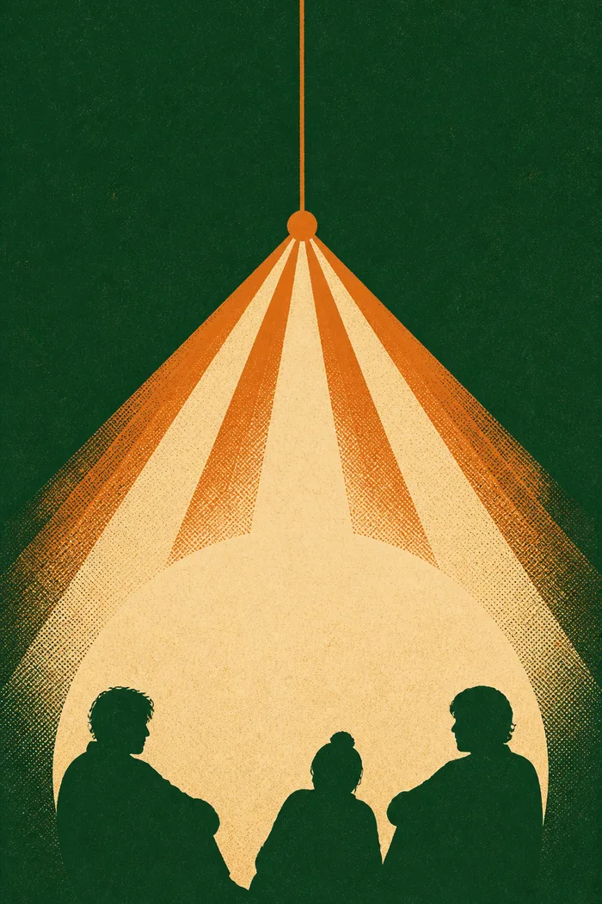
Organizer
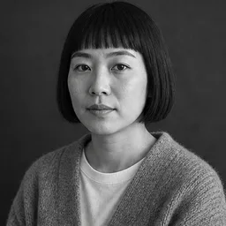
静岡市を拠点に活動するグラフィックデザイナー。食品メーカーのインハウスデザイナーを7年務めたのち、2023年に「よふかし舎」として独立。紙の仕事を軸に、展示やイベントのアートディレクションも手がける。
2024年から「ながいゆうべ」を主催し、今年で三度目。この町でつくっている人が、年に一度だけ同じ部屋に集まる日をつくりたいと思っている。
※掲載内容は予告なく変わることがあります。 © 2026 ながいゆうべ
終電は、まだ先でいい。
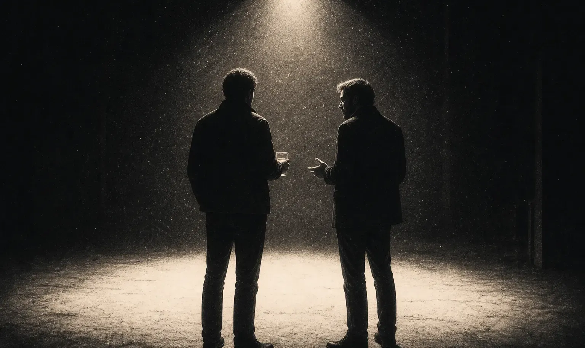